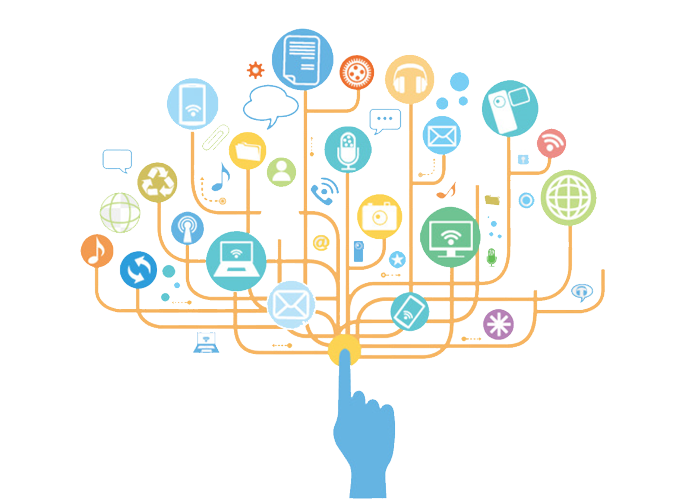

Solution Covid
Gestion de l’entreprise avec l’IOT

Le coronavirus change nos vies et nous fait travailler afin de proposer de nouvelles solutions et astuces.
L'IoT a réussi à assurer la sécurité de vos employés et clients. Vous pouvez contrôler la distance sociale, vérifier la température, compter les personnes sans effort, réduire le nombre de travailleurs et définir le personnel potentiellement infecté.
Nous vous recommandons vivement d'utiliser ces technologies afin que vous puissiez promettre la sécurité à vos employés et les faire quitter leur domicile. De plus, vous ne serez pas obligé de tout refermer en un rien de temps.